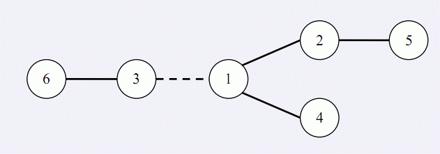

在 W 星球上有 n 个国家。为了各自国家的经济发展，他们决定在各个国家
之间建设双向道路使得国家之间连通。但是每个国家的国王都很吝啬，他们只愿
意修建恰好 n – 1条双向道路。 每条道路的修建都要付出一定的费用， 这个费用等于道路长度乘以道路两端的国家个数之差的绝对值。例如，在下图中，虚线所示道路两端分别有 2 个、4个国家，如果该道路长度为 1，则费用为1×|2 – 4|=2。图中圆圈里的数字表示国家的编号。

由于国家的数量十分庞大，道路的建造方案有很多种，同时每种方案的修建
费用难以用人工计算，国王们决定找人设计一个软件，对于给定的建造方案，计
算出所需要的费用。请你帮助国王们设计一个这样的软件。